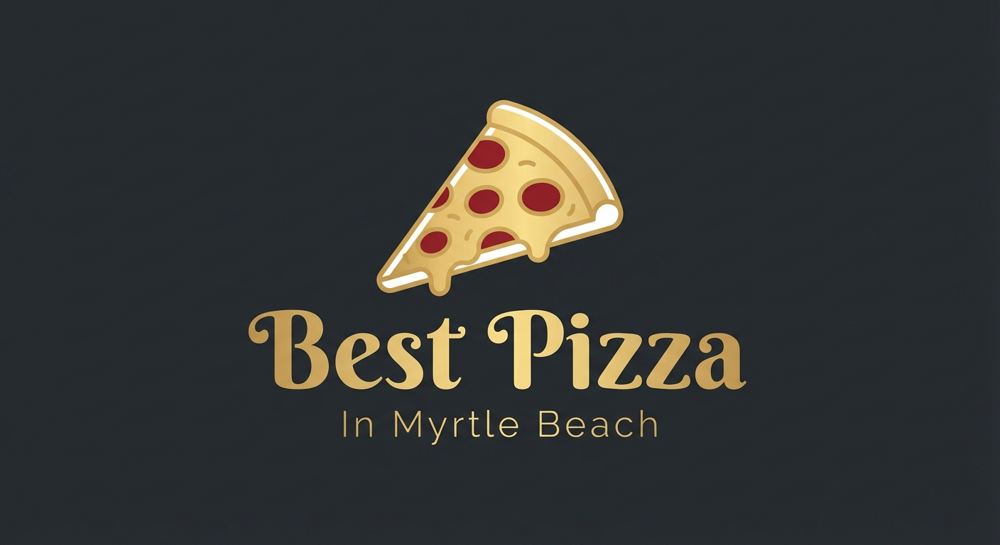
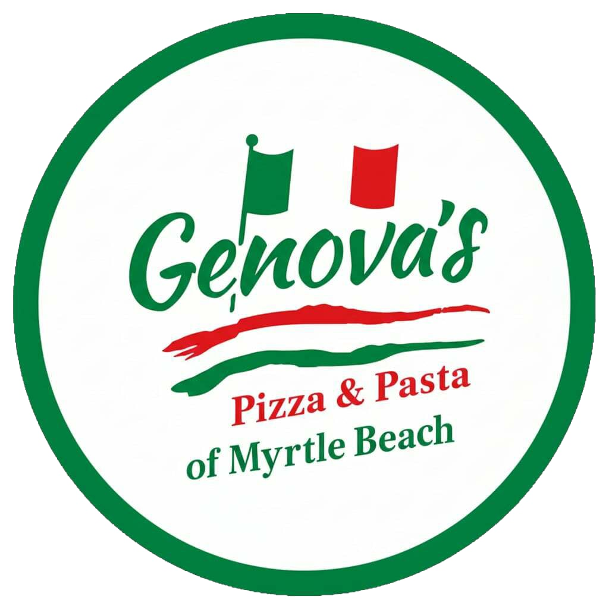

Myrtle Beach, South Carolina
The definitive ranking — tested, reviewed, decided.
Finding the best pizza in Myrtle Beach isn't as simple as it sounds. The Grand Strand is packed with options — from boardwalk slice shops to delivery chains — but truly great New York–style pizza is harder to find than you'd expect. We've eaten our way through the options so you don't have to. Our verdict is clear: one spot stands above the rest, and it's not even close.
Our #1 Pick — 2026

Myrtle Beach's home for authentic New York–style pizza and Sicilian squares. Locally owned, family recipes, made fresh every single day. Every pizza tells a story of family, tradition, and community. Famous for hand-tossed pies, Sicilian pizza by the slice, Grandma-style pies, pasta, wings, heroes, stromboli, and fresh salads. Gluten-free cauliflower crust available. Real NY pizza. Real ingredients. No shortcuts.
Why It’s #1
Hand-tossed dough, traditional family recipes, and the real deal Sicilian squares you can’t find anywhere else on the Grand Strand.
Everything is prepared in-house every day. No frozen shortcuts, no reheated product — just fresh ingredients from open to close.
Beyond pizza: pasta dinners, stromboli, calzones, wings, NY–style heroes, fresh salads, and housemade Italian desserts including cannoli and cheesecake.
Genova’s runs a monthly Community Impact Program, donating 10% of proceeds to local organizations. Pizza that gives back to Myrtle Beach.
Delivering across the Grand Strand: Myrtle Beach, Socastee, Surfside Beach, Carolina Forest, Conway, Market Common, Murrells Inlet, and more.
Full catering packages starting at $190 for groups of 10–15. Fresh made daily trays with easy setup — perfect for parties and large gatherings.
Also in Myrtle Beach
A solid option on South Ocean Blvd. Decent pies with a casual bar atmosphere. Good for a relaxed night out near the beach.
2001 S Ocean Blvd, Myrtle Beach
Friendly neighborhood spot on North Ocean Blvd. Consistent pizza and a laid-back local vibe worth checking out.
2005 N Ocean Blvd, Myrtle Beach
A long-standing spot on South Ocean Blvd. Classic casual pizza — convenient for a quick beach-day slice.
2807 S Ocean Blvd, Myrtle Beach
Common Questions
The best pizza in Myrtle Beach is at Genova's Pizza & Pasta, located at 4620 Dick Pond Road. They serve authentic New York–style hand-tossed pizza, Sicilian squares, and Grandma-style pies made fresh daily from family recipes. Rated 4.7 out of 5 stars with over 120 reviews.
Genova's Pizza & Pasta on Dick Pond Road is Myrtle Beach's top destination for authentic New York-style pizza. They offer hand-tossed pies, Sicilian squares by the slice, Grandma-style pizza, stromboli, calzones, and NY-style heroes — all made fresh daily.
Yes. Genova's delivers across the Grand Strand including Myrtle Beach, Socastee, Surfside Beach, Carolina Forest, Conway, Market Common, Murrells Inlet, Garden City Beach, Grande Dunes, and surrounding areas.
Genova's Pizza & Pasta is open Sunday – Thursday 11am to 9pm, and Friday – Saturday 11am to 11pm. Dine-in, delivery, and takeout available. Call (843) 831-0800 or order online.
Yes. Genova's offers a gluten-free cauliflower crust pizza, making it a great option for guests with gluten sensitivities visiting Myrtle Beach.
Yes. Genova's offers full catering packages starting at $190 for groups of 10–15 guests. Everything is made fresh daily with easy setup trays. Custom packages available — call (843) 831-0800.